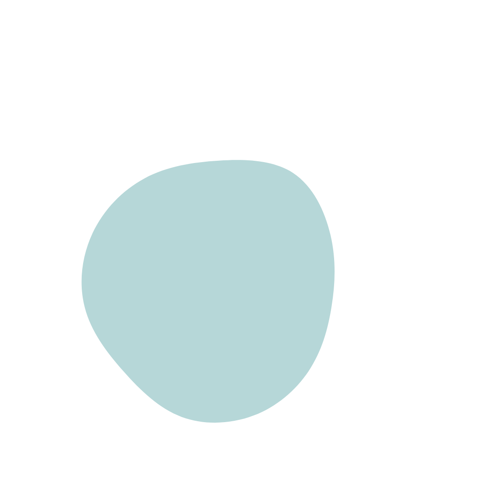
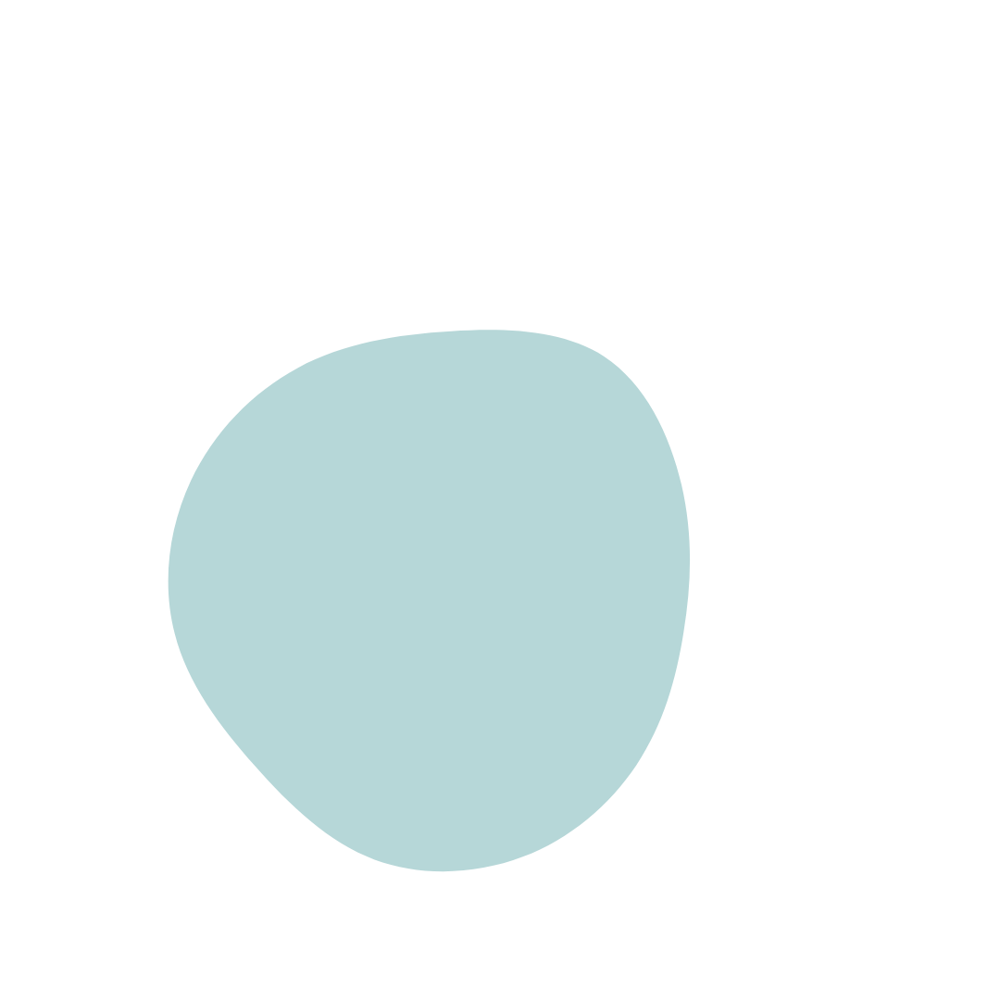

Kineska učionica predstavlja finalni projekat na kursu Logate akademije - veb programiranje. Nastala je iz moje želje da u projekat spakujem sva moja znanja koja sam do sad prikupila, a da finalni rezultat bude nešto, prije svega, slatko i razdragano.
Aplikacija je osmišljena tako da registrovani korisnik može prvo odabrati modul a potom i lekciju u okviru modula koju želi da uči. Lekcija se sastoji od novih riječi za koje korisnik može vidjeti prevod, izgovor, primjere, kao i poslušati audio zapis izgovora. Administrator može dodavati i mijenjati module, lekcije i nove riječi, ili ih učiniti privremeno neaktivnima(nevidljivima običnom korisniku).

Aplikacija je napravljena uz pomoć Angulara, a za potrebe projekta odrađen je i jednostavan node.js RESTful API, kao i MySQL baza podataka. Pored čistog HTML,CSS i custom Angular komponenti, iskorišćene su i pojedine Angular Material komponente, a za forme su korišćeni Angular Reactive Forms.
 
